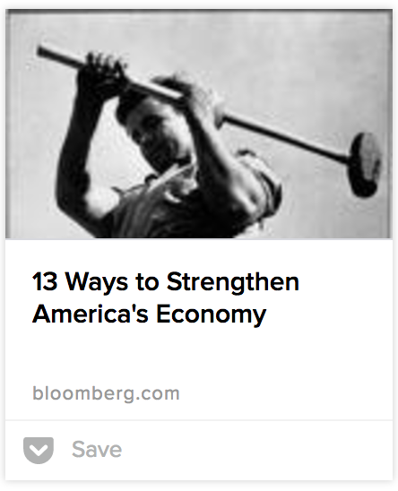

A nice illustration of how the economy is for Dad. Google for images of "the economy" and see how many women turn up.I haven't the time to write this up, right now, though I'd like to, but here's my first regular interview of the year with Alex Sloan on Canberra ABC Radio which was a nice rollicking ramble on the question of what we do in the next recession.
https://soundcloud.com/nicholas-gruen-986535142/mfe-feb-2016-stimulus-organising-a-ball
I've now got a transcript of the interview which is below the fold.
Interviewer:
We wanted to talk about what should Australia be doing now in case of secular stagnation which I found so interesting in itself.
Nicholas:
Secular stagnation is all the rage. It’s something which people started talking about during the great depression and they said, “Well what if the low level of growth that we are experiencing is actually kind of normal?” And people are asking that question in the northern hemisphere where things are pretty grim and have been since this global financial crisis. So, we have lost. If you look at the growth trajectory of the developed economies scaling into the global financial crisis, even if you allow that some of it might have been a little bit, the growth might have been slightly higher than sustainable, all the evidence is that it was relatively sustainable growth path.
And we basically took a massive hit to where we were and then we’ve grown more slowly ever since and if you add that gap up, it adds up, I can’t remember the exact figure. It’s something like 5 to 7 trillion dollars of output that we are now lower than every year than we would have if we had kept the trajectory before the global financial crisis and the global economy from my memory is about 60 trillion dollars so this is a massive figure. It’s just a massive figure.
And some, in places like the UK, the hit has been taken not so much by unemployment, unemployment’s lower there than it is here, but by lower standards of living. And, elsewhere, say on the continent, pretty obviously Greece and Ireland and Portugal and Spain and Italy, the problem is basically the problem of the unemployed. But anyway, we’re just growing at a very slow level and there are things that we can do about that, but we don’t really have the will to do it. And we don’t have the degree of unanimity amongst the experts economists to say exactly what should be done.
Interviewer:
And one way that it can be done, this led you to talking about the stimulus.
Nicholas:
Yeah. Let me just finish that point by quoting you. I don’t have it in front of me, but I can remember it pretty well. Maynard Keynes had been in the Treasury in World War 1 and did in fact resigne from the Treasury in 1919 to write this world-shaking book called The Economic Consequences of the Peace where he prophesized that the Versailles Treaty would impose secular stagnation on Europe and would lead effectively to World War 2.
Interviewer:
Which it did in Germany particularly.
Nicholas:
Yeah, and so in 1943, he wrote to someone and what had happened – it’s an incredible and miraculous story which I wrote up in a column once actually which was that 3 people were taken out from the cold by this nation called the United Kingdom, which we think of as a very crusty and aristocratic sort of place. But when the great hour of crisis came, they dragged 3 people out two of whom had been basting the establishment mercilessly through the 30s. And that was John Maynard Keynes in economics. And he ran the war efforts – the economic war efforts. Winston Churchill who became prime minister and a man called Allan Turing who was an obscure - I’m pretty sure he’s from Cambridge – graduate. And he won the battle of the Atlantic by essentially decoding the enigma code.
And then by the 1950s, Churchill was senile and bundled out of office the moment the war was won. Keynes died in 1946 and Turing was arrested for gross indecency, given hormone injections, and almost certainly killed himself. Anyway, that’s a digression. So, Maynard Keynes, wrote the letter – I can’t remember who it was written to and it said, “Here I am, 1943, in the Treasury like a recurring decimal. But I can say that this time, when the war is over, things will be different because nobody wants to get back to the world that we had before the war began.” And when the horror of World War I ended everybody wanted to say “Well, let’s try and make a world just the way it was before the war.” And they just made it awful dog’s breakfast. And the relevance of that story is that we’ve had this incredible crisis that’s costing us 7 trillion dollars in output and in income. And we sort of want to get back to the way the world was in 2008. The world was broken in 2008. And we’re sort of not gonna make it any very different.
Interviewer:
So, what to do?
Nicholas:
The banking system will still be unstable and so on. Anyway, one of the things we should be doing is saying, “Well, this could come to our shores. If China falls over, we’ll be in a lot of trouble. What are the lessons we can learn from stimuluses we’ve had in the past?” And one of the things is we can realize that the stimulus that was inputted about the redcap - which was very successful in American economics, it’s achieved a great deal. We were 1 of 2 countries that went through, developed countries that went through the crisis without a technical recession. But one of the things that was wrong with it was that it was a stimulus with a hard hat on.
And what I mean by that is that everyone in life of course wants to be taken as a serious sort of person. And we all know that building a school hall is a serious thing to do and you put your hard hat on, and it employs people. But teaching kids how to do stuff better or retraining workers, you don’t end up with a building at the end of it and no one puts their hard hat on, and none of the money that we made available in the stimulus was like that.
Interviewer:
So, this is what you describe as feminizing the stimulus? This is building human capital.
Nicholas:
Indeed. So another little factoid for you is that all of the capital in our economy that we can see - that’s buildings, plant and equipment, and natural capital, you know the minerals on the ground and so on - that's probably worth something of the order of five trillion dollars. Which is called kind of quite a lot of money, twice, no it’s nearly three times the size. Two and a bit times the size of our annual output. But human capital - the value of what is collectively in our heads, I mean our computers, our know-how - is worth two, three something like three maybe four times. It's hard to measure but three or four times the amount of physical and natural capital.
Recently Lateral Economics quoted a figure of 18 trillion which was extrapolated from old World Bank work but now theWorld Bank’s done the work again quite recently and they came up with a figure of 16.7 trillion dollars. So, we should ask ourselves the question "what can we spend money on that will firstly employ people, if you know during a downturn and to some extent we have a downturn now". But it's a very mild one, we're still growing at a reasonable rate. What can we spend more money on and employ more people with and at the end of that process, be able to scale it back relatively quickly when we don't need it anymore and be left with an asset?
Interviewer:
Because that's going to say teachers, but we can't just scale them back.
Nicholas:
No, and that's the problem. So, I mean another part of the solution here is that one of the things about the stimulus that was quite a new thing actually, the first time this happened in my recollection was with the Paul Keating stimulus. There was a stimulus before the Paul Keating stimulus about six months before and it’s very telling that at the end of the Hawke Government the Hawke stimulus was called - I don't remember the date but let's say it was October the 18th - it was called the Prime Minister's Economic Statement May 18th 1990. Now, what was Paul Keating Stimulus called? Well, it was the first of these kinds of documents to have a propaganda name it was called: One Nation. So, that immediately tells you that we're thinking of the stimulus a little bit like you would organize a ball. You say, what's our theme? Which is a very peculiar thing to do. You might do that at the end of the process but the task in front of you is to try and think of all of the things that can be done that have the characteristics that they will employ people at short notice that those people can then be disemployed, or you know it's a temporary thing, and that it leads us with something valuable.
Interviewer:
So, what's an example of that, of those kinds of jobs?
Nicholas:
So, you could have lots of experiments. You could have any teachers that wanted to hire a teacher's aide to do some kind of research with the university on how to teach better, for instance. We always need more resources in early childhood development. But now again, you might have some problems with scaling this back but maybe we shouldn't scale it back. You would loosen the purse strings for home visiting after children have been born, you know, neonatal home visits, mothers’ groups for early childhood development. Early childhood development generally. Childcare and so on.
Interviewer:
Now, you've got me thinking. So, all kinds of programs that could go into schools that wouldn't be permanent, but we're going to get a result.
Nicholas:
Indeed, indeed. And in health, wherever. And of course, I don't have the answers to this. This is a bit like when, you know, tariffs are taken off cars and people say where are the jobs gonna come from and the answer is we don't know where the jobs are going to come from but if we keep the economy going we'll get some jobs. So, the analogy I'm making there is that I can't tell you, I can only give you examples. And you know an example with a hard hat on is pink bats. But there are lots of other. If we put our, you know, I don't know now I'm going to get sexist and say put our aprons on.
Interviewer:
No, don't.
Nicholas:
You would’ve hated that, sorry. But a soft hat anyway. And it obviously doesn't have to be associated with women.
Interviewer:
No. We have many men working in education.
Nicholas:
Men are serious, and women’s work is not serious. That's the thing that I think is - there are very large amounts of government money spent on non-hard hat types of things. We simply have to put our thinking caps on and local councils - we'll have lots of local councils. We’ll have pet schemes that they want to get up and shouldn't have. We’re not organizing a ball. The theme doesn't have to be hard hat. The theme is: create jobs that we can scale back.
Interviewer:
The trouble is the politicians want to open something. So, they could open the school halls, but they can't.
Nicholas:
That's right, that’s right. But I don't think that. I mean I said that's a pain point and so that's just something that you put in a list of say, “Okay, how do we solve that?” Because politicians can go to schools and award prizes for the data science club that was funded because of the stimulus. I can't do it necessarily while I talk to you.
Interviewer:
Yeah, you got me there. I can see the photo op now.
it depends on whether we have secular stagnation or not. If not then monetary policy takes precedence. If so it won't work very well and you have to rely on fiscal policy.
However secular stagnation does imply reform is needed of some sort!
Terrific thinking about stimulus here. Really worth a listen, for anyone who's wondering. Is it written up anywhere?
One query: why would you think that aprons are an exclusively female thing? Don't you cook - or, for that matter, weld?
OK, came back after a few days' break to listen to this and had forgotten that Nick specifically said it's not written up anywhere.
Thanks David,
And you've answered the first question you put below. As for the second, you're right but you have to tiptoe around these days. Especially with truculent interviewers!
Some similar ideas about the efficacy of a feminised stimulus explored here, though in a style that's not to my taste. What I mean by that is that it's very much an advocacy piece advocating spending more on systems, not using that spending to improve their operations. There's also the practical political question of how you have a surge in spending which is self-liquidating as our 'cash splashes' and short sharp light infrastructure building program was - in the case of both school buildings and pink batts (though there were other - OHS - issues with pink batts which are not relevant to this point - and themselves are not as cut-and-dried as the then Opposition would have had us - and did have us - believe).